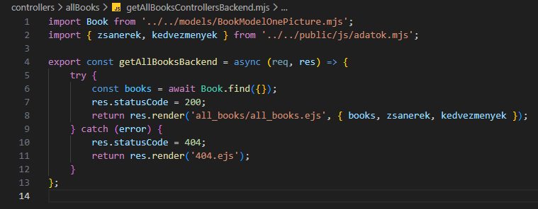

Összes könyv kezelése - getAllBooksControllersBackend.mjs
Összes könyv kezelése - getAllBooksControllersBackend.mjs

Ebben a részben szerkesztjük a controllers/allbooks mappában a getAllBooksControllersBackend.mjs állományt, amelyben kidolgozzuk a CRUD Read művelethez tartozó logikát. Ez megfelel a http GET metódus-hoz tartozó logikának.
-
Szerkesszük a
getAllBooksControllersBackend.mjsállományunkat.-
import Book from '../../models/BookModelOnePicture.mjs';- aBookmodell alapértelmezett beimportálása. -
import { zsanerek, kedvezmenyek } from '../public/js/adatok.mjs';- a zsánerek és kedvezmények nevesített beimportálása. -
export const getAllBooksBackend = async (req, res) => {...};- hozzuk létre és vigyük ki nevesítve ahttp GET metódus-hoz tartozó logikát (ReadaCRUDműveletekből). -
try {const books = await Book.find({}); res.statusCode = 200; return res.render('all_books/all_books.ejs', { books, zsanerek, kedvezmenyek });}- a sikeres ág a 200-ashttp hibakód-dal. A könyveket, zsánereket és kedvezményeket átadjuk aall_books/all_books.ejsállománynak. -
catch (error) { res.statusCode = 404; return res.render('404.ejs'); }- a sikertelen ág a 404-eshttp hibakód-dal.
-